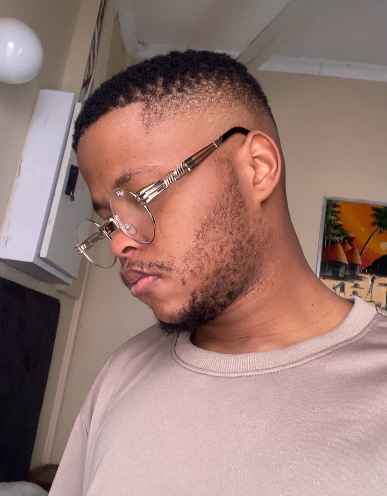

Welcome
Hi, I’m Kamogelo Molete — a soon-to-be graduate with a Bachelor’s degree in Computer Science and Electronics from North-West University (graduating in May 2025). While my academic journey gave me a foundation, I’ll be the first to admit: I didn’t leave university feeling like a confident coder. But I didn’t let that stop me.
Driven by a real hunger to break into tech, I turned to self-learning. I’ve been working through a front-end development course on Udemy, and even though I’m just 29% through, it’s been eye-opening. Suddenly, concepts I struggled with during my studies are starting to click. Every day, I’m building real coding skills, one project and one challenge at a time.
I’m passionate about becoming a front-end developer — not just in title, but in skill. I may not have all the experience yet, but I’ve got the work ethic, determination, and mindset to grow fast. I’m looking for any opportunity to prove myself, gain hands-on experience, and start building a better future for myself and my family.
If you’re looking for someone who’s hungry to learn, willing to start from the bottom, and committed to improving every single day, I’d love to connect.
 CV
CV